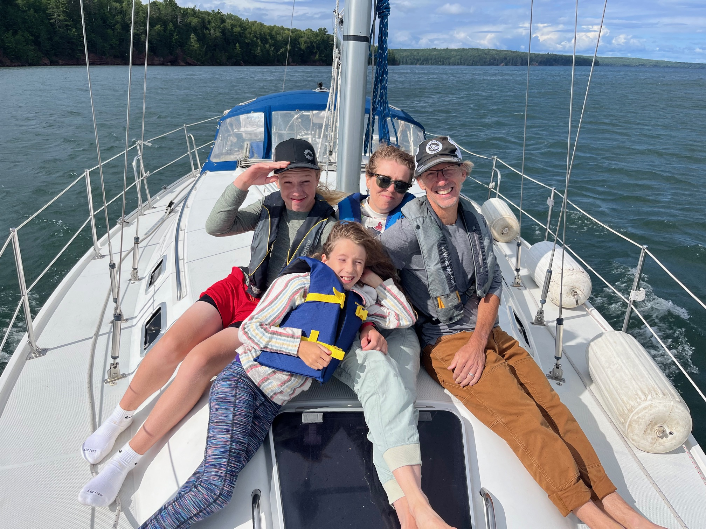

| Xs | Quantitative | Categorical | Mixed |
|---|---|---|---|
| 0 | One sample t-test | ||
| 1 | Simple regression; Pearson's r | Independent t-test; Point biserial r | |
| >1 | Multiple regression | One way ANOVA; Factorial ANOVA | ANCOVA; ATI |
1 Overview
1.1 Assignments
Survey (complete ASAP)
Read
- Judd et al. Chapter 1, Introduction to Data Analysis
Application assignment (due 9/11 @ 1:30 via Canvas)
1.2 Today’s Outline
Quick introductions
Syllabus and course outline
General Linear Model framework
1.3 My Research
I am a clinical psychologist with a focus on Substance Use Disorders.
My laboratory focuses on algorithm development for temporally precise psychiatric risk prediction (e.g., moment by moment relapse risk prediction; efficient and early psychiatric screening) and “just-in-time” personalized interventions that adapt to both characteristics of the patient and their moment in time.
To this end, we combine analytic approaches from machine learning with novel, highly informative signals (e.g., geolocation; cellular communications; social media activity; physiology via wearable biosensors) derived by passive personal sensing.
I also teach an introductory course on Applied Machine Learning each spring (Psychohology 752).
1.4 My Personal Life
I was born on a small island…
- My family
- Melody, Jacob (13 years old) and Hana (10 years old)

- My/our passions
- Running, biking, nordic skiing, all things mountain…
- My other family…..

- “John”, he/him
1.5 So tell us who you are …
Our TAs
You
- Your preferred name/nickname
- Department/area group
1.6 The Syllabus and Course Webbook
https://jjcurtin.github.io/book_glm/
1.7 The General Linear Model
Top level: General Linear Models
3rd level: Multiple Regression Models
2nd level: Simple Regression Models
Bottom level: Single Mean Models
1.8 Single Mean Models (Bottom level)
Basic Question
What is the mean of an outcome/dependent/criterion variable in a sample? Is that mean different from some specified value?
\(Y = b_0\)
Example
What is the mean IQ of Psyc 610 students? Is it different from the average IQ of 100?
Question: What is this GLM special case analysis often called?
One sample t-test
1.9 Simple Regression Models (2nd level)
Basic Question
What is the relationship between a predictor variable and a dependent variable?
\(Y = b_0 + b_1*X_1\)
Example
Is trait level of positive emotionality related to satisfaction with a romantic relationship?
Question: What is the special case analysis when both \(X\) and \(Y\) are quantitative?
Pearson’s correlation (also simple bivariate regression)
Question: What is the special case analysis when \(X\) is a regressor coding for a dichotomous variable representing group membership (e.g., sex)?
Between groups (independent samples) t-test (or one-way ANOVA with two groups)
1.10 Multiple Regression Models (3rd level)
Basic Question
What are the relationships between a linear combination of predictors and a dependent variable?
\(Y = b_0 + b_1*X_1 + b_2*X_2 + b_3*X_3\)
Example
How well do the variables of (a) number of absences, (b) time spent studying, and (c) interest predict final exam scores?
Question: What is the special case analysis when \(X\)s are regressors coding for categorical variable(s) representing group membership?
Analysis of Variance (ANOVA)
Basic Question
What are the mean differences in the dependent variable between the groups represented by the independent variable(s)?
Example
Are there differences among control, placebo and alcohol groups on mean fear response to threat of electric shock?
Question: What is the special case analysis when \(X\)s are regressors coding for categorical variables representing group membership, and one or more quantitative covariates?
Analysis of Covariance (ANCOVA)
Basic Question
What are the mean differences in the dependent variable between the groups represented by the independent variable(s), holding one or more covariates constant?
Example
Are there differences among control, placebo and alcohol groups on mean fear response to threat of electric shock, after equating the groups on trait anxiety scores?
Question: What is the special case analysis when \(X\)s are regressors coding for categorical and quantitative variables representing group membership and quantitative scores on individual difference variables?
Aptitude Treatment Interaction (ATI)
Basic Question
Are the magnitudes of the contrasts among groups different across different levels of some individual difference variable?
Example
Does the effect of CBT treatment (i.e., contrast of CBT vs. wait list control) on subsequent alcohol related problems differ dependent upon level of intelligence?
1.11 General Linear Models (Top level)
Basic Question
What are the relationships between linear combinations of two sets of variables?
\(b_{Y1}*Y_1 + b_{Y2}*Y_2 + b_{Y3}*Y_3 = b_1*X_1 + b_2*X_2 + b_3*X_3\)
Example
What are relationships between (a) Personality and temperamental variables, and (b) frequency/quantity of substance use, problems, and motives for use?
Question: What is this GLM special case analysis called?
Canonical correlation
Question: What is the special GLM case when \(X\)s are regressors coding for categorical variables representing group membership?
Multivariate Analysis of Variance (MANOVA)
Basic Question
What linear combination of dependent variables (\(Y\)s) maximally differentiates groups?
Example
Do children with ADHD who receive (a) medication, (b) parent behavioral training, or (c) both, differ in indices of academic and behavioral functioning?
Question: What is the special GLM case when \(X\)s are regressors coding for categorical and quantitative variables representing group membership and quantitative covariates?
Multivariate Analysis of Covariance (MANCOVA)
Basic Question
What linear combination of dependent variables (\(Y\)s) maximally differentiates groups, holding constant one or more covariates?
Example
Do children with ADHD who receive (a) medication, (b) parent behavioral training, or (c) both, differ in indices of academic and behavioral functioning, when equated for parental expectations?
Question: What is the special GLM case when \(X\)s are regressors coding for quantitative variables and \(Y\)s are categorical variables representing group membership?
Discriminant Analysis
Basic Question
What linear combination of independent variables (\(X\)s) maximally differentiates groups (represented categorically by \(Y\)s)?
Example
What combination of sociocultural, personality, and intellectual variables best differentiates repeat juvenile offenders and non-repeat juvenile offenders upon completion of boot-camp?
Question: What is the special GLM case when \(X\)s are regressors coding for categorical variables (or constant) representing group membership and \(Y\)s are repeated measures of a continuous/quantitative variable?
Repeated measures or mixed model ANOVA
Basic Question
What are the mean differences across \(Y\)s, overall or between the groups represented by the independent variables (\(X\)s)?
Example
Does affective response differ when viewing pleasant, neutral vs. unpleasant slides? Does this slide type effect differ among participants in two beverage groups (alcohol vs. no-alcohol)?
1.12 Survey of GLM Landscape
Single Y
Multiple Ys
| Xs | Quantitative | Categorical | Mixed |
|---|---|---|---|
| 0 | Repeated measures ANOVA | Mixed model ANOVA; Mixed model ANCOVA | |
| 1 | Hotelling's T | ||
| >1 | Canonical correlation | One way MANOVA; Factorial MANOVA; Discriminant analysis | MANCOVA |
1.13 Final, Mind-blowing Wrinkles
The top-level General Linear Model is itself a special case of an even more general statistical model - the Generalized Linear Model - which allows for models with dependent measures (errors really) from different distributions and non-linear link functions connecting \(X\)s and \(Y\)s.
The General Linear Model can also be thought of as a special case of Structural Equation Modeling.
All of the variables that we have described so far are single-indicator, observed variables (i.e., individual constructs of interest are measured using a single task or measure).
Each of the statistics we have described have a multiple-indicator, latent variable analog. They are special cases of these latent models in which there is only one indicator per individual construct.